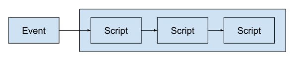
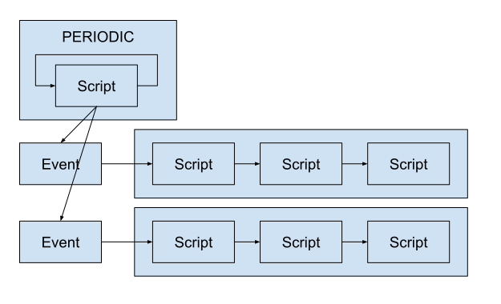
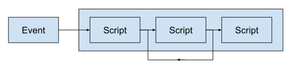
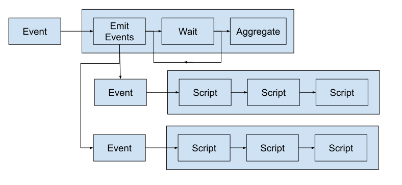

Концепция
Задача обработки данных обычно разбивается на функциональные блоки, связи между которыми формируют алгоритмический граф обработки данных. Если этот граф достаточно простой и состоит в основном из последовательных цепочек блоков с небольшим кол-вом ветвлений, то можно значительно упростить код планировщика и наглядность интерфейса администратора. Многолетний опыт показывает, что концептуально простую Систему обслуживать гораздо проще.
Давайте рассмотрим типичные примеры алгоритмических графов, которые можно реализовать в alt_processing.
 Простой вариант цепочки Скриптов по Событию.
 Скрипт периодической Задачи при обнаружении новых данных генерирует События на обработку. События могут быть одной Задачи или разных для разных типов данных. События могут обрабатываться параллельно при наличии ресурсов.
 Один из Скриптов перезапускается до тех пор, пока не выполнится условие. Например, до тех пор пока какая-нибудь операция (например, сетевой запрос) не выполнится успешно.
 Первичная Задача состоит из трех Скриптов. Первый Скрипт анализирует параметры и генерирует События вторичной Задачи, которые обрабатываются параллельно. Второй Скрипт первичной Задачи, перезапускаясь, ждет окончания Обработок вторичной Задачи. По окончанию вторичных Обработок третий Скрипт завершает Обработку агрегируя результаты вторичных Обработок.